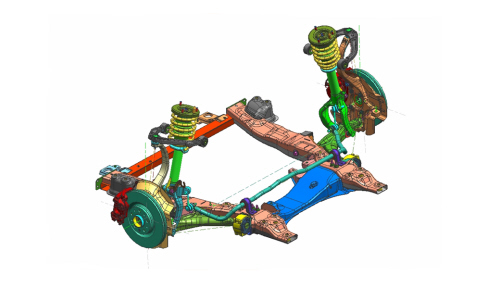
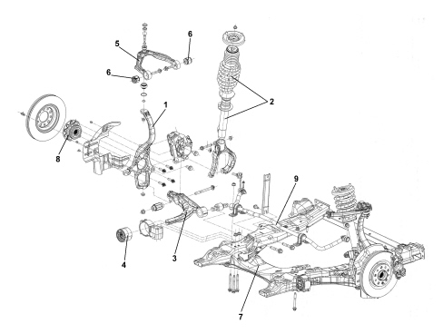
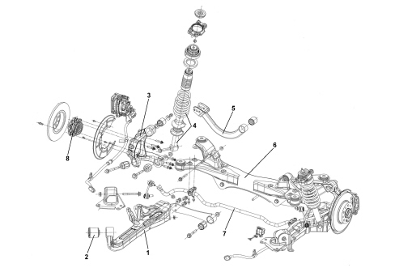

CONSTRUCTION SPECIFICATIONS
Front suspension with quadrilateral, i.e. two superimposed triangles. In this configuration the shock absorber and the spring are flexible damping elements without structural functions.
The rear suspension is the multilink type designed to allow:
- recovery of camber during roll to keep the tyre vertical in order to maximize the lateral force that can be transmitted;
- the elastokinmeatic retraction of the wheel centre when going over an obstacle to reduce the longitudinal component of the impact force;
- control of steering round bends and when braking through a stabilizing effect and prompt response in the various usage conditions.
The combination of the two suspensions makes it possible to produce the following strong points:
- precise, gradual steering and steering wheel load
- good responsiveness
- good stability and ease of control even in poor grip conditions
- very smooth, balanced movements
- very good comfort for a sports vehicle.
Front and rear wheel hubs with integrated bearing for A.B.S. active sensors.
FRONT SUSPENSION

The quadrilateral structure guarantees very good dynamic performance, excellent steering and precise driving.
The track rod end-steering knuckle connection has been retracted and moved towards the outside. This has made it possible to improve the stability of the vehicle during braking.
Careful attention to the matching of the steering geometry and wheel arch volume has made it possible to produce high steering angles even with larger tyres with notable improvements in the turning circle.
Front suspension components

1. Wheel damper
2. Spring-shock absrober assembly
3. Lower track control arm
4. Rear bush
5. Upper track control arm
6. Sliding bushes
7. Chassis
8. Wheel hub
9. Anti-roll bar
The wheel damper has been redesigned at the points where it is connected to the levers using the space available inside the 16" wheel rims to the fullest with considerable benefits in terms of lateral strength.
The coaxial spring-shock absorber assembly with bi-tube shock absorber has been increased in size and now has a 15 mm stem with a 32 mm valve assembly. These increased dimensions have improved the filtering capacity of the shock absorber also reducing hysteresis levels. The connection to the bodyshell takes place by means of a large split mounting with a high noise filtering capacity.
The aluminium lower track control arm combines excellent structural specifications with being lighter than previous solutions. The main feature is the bushes connected to the chassis. The front bush, which is extremely rigid, supports most of the side and longitudinal loads opposing lateral deformation with benefits in terms of loss of camber when cornering. The hydraulic rear bush has doubled in size and increases the harshness longitudinal filtering capacity.
The upper aluminium suspension arm has a pair of sliding bushes, the preferred solution because it is the best in terms of smooth steering. The dry friction bushes are tougher and more reliable. The mounting points on the bodyshell have vertical reinforcements and have been designed for maximum structural rigidity improving the noise filtering capacity.
The suspension has been secured to the bodyshell by means of a closed geometry frame with high lateral rigidity. In addition to the ten fastenings on the bodyshell there is also a strut between the chassis and the bodyshell side members which makes it possible to control the collapsing of the front section during a crash in conjunction with the suspension frame.
REAR SUSPENSION

The multilink structure suspension makes it possible to control the movements of the wheels resulting in the highest level performance compromises. In this case the three lever solution with a transverse plate has made it possible to improve the performance of the various longitudinal components and achieve better filtering of lateral harshness resulting in a fast response time and improved stability and road holding.
Rear suspension components

1. Longitudinal bar
2. Hydraulic bush
3. Steering knuckle
4. Spring-shock absrober assembly
5. Camber arm
6. Crossmember
7. Anti-roll bar
8. Wheel hub
The high resistance steel longitudinal arm has the task of guiding the damper during jolts guaranteeing longitidunal motion at the same time. Fitted with a hydraulic bush 80 mm in diameter, it allows soft retractions with excellent damping levels for post-impact consequences. The fltering bush is secured to the bodyshell by means of a bracket with three fastenings. The fastening has been improved by placing the retainer inside the bodyshell. This has made it possible to achieve good strength properties and improved pitch variation with further benefits when driving over obstacles.
In addition to having a high strength hub, the aluminium stub axle also houses the connecting bushes for the camber lever and for the longitudinal arm.
The latter is connected by a rigid rubber-metal bush matched with a uniball joint with a teflon coating. Thanks to this and the front bush it has been possible to achieve a fast response together with excellent road holding thanks also to the considerable toe in of the wheels under lateral loads.
The stub axle is compatible for 4x4 applications.
The bi-tube shock absorbers with coaxial springs make it possible to control the three damping areas with precision both when compressed and recoiled, thereby producing a good compromise between handling and comfort.
The spring shock absorber assembly is secured to the bodyshell by means of a large split shock absorber mounting which has made it possible to produce an excellent filtering performance even with high damping forces.
The camber arm, in addition to allowing the adjustment of static camber, has made it possible to produce a geometry that guarantees excellent recovery of camber during jolts in order to always ensure the best impression on the ground for the tyre even when driving at the limit.
The entire suspension is connected to the vehicle by means of a high resistance steel crossmember, insulated from the bodyshell by means of four 90 mm bushes that increase the insulation of high frequencies. All the suspension mounting points have been designed to be as strong as possible resulting in fast response times and improved filtering with a reduction in bodyshell entry noise.